Tablas
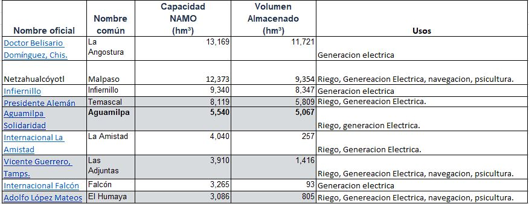
Gráfica con las presas más famosas
Como se ve en la gráfica, se ve que ha afectado bastante la crisis, más a comparación de años pasados, y se puede dar por las siguientes causas
- El cambio climático
- Lo que consumimos
- Contaminación
- Sobrepoblación
A continuación se desplegaran las gráficas por separado (las cuales se actualizan constantemente)
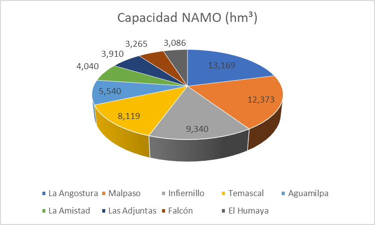
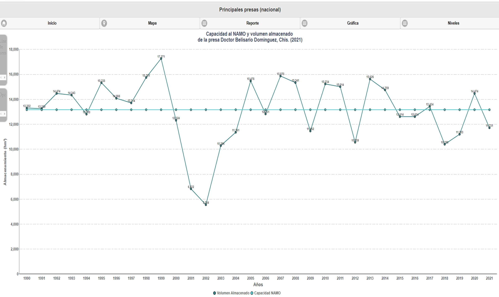La Angostura
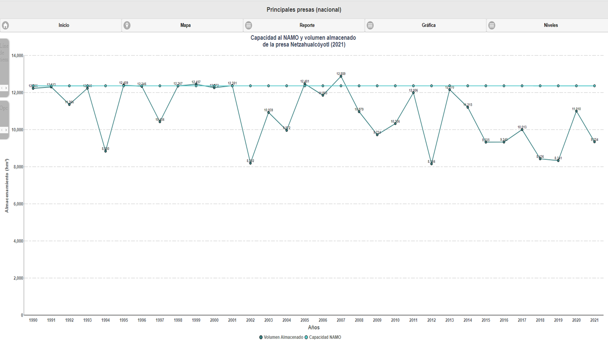Malpaso
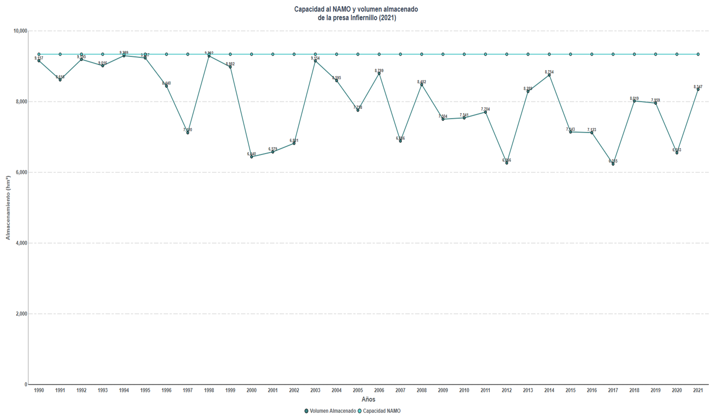Infiernillo
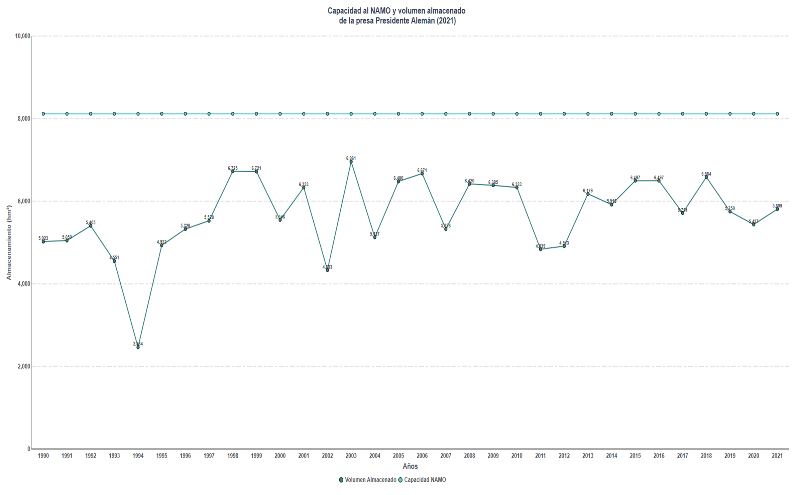Temascal
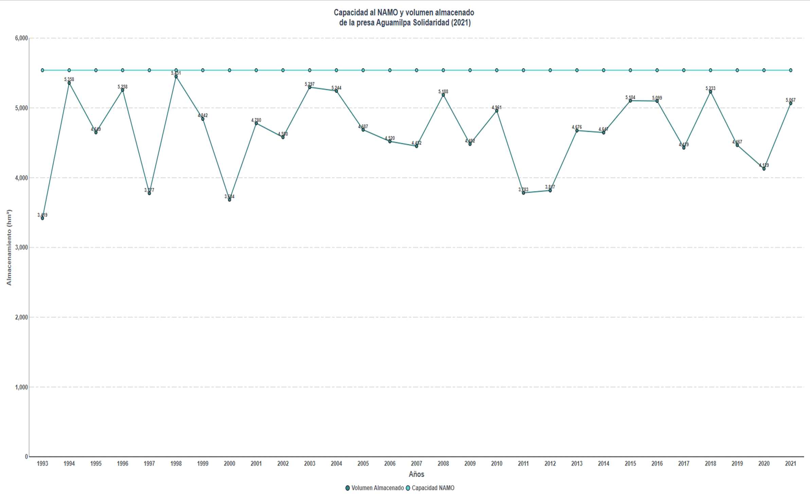Aguamilpa
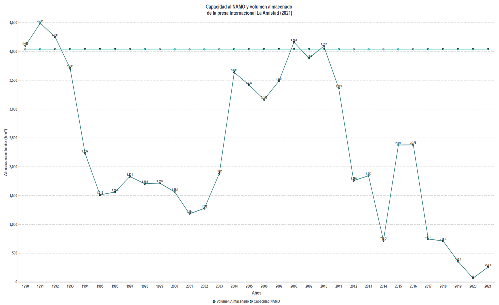La amistad
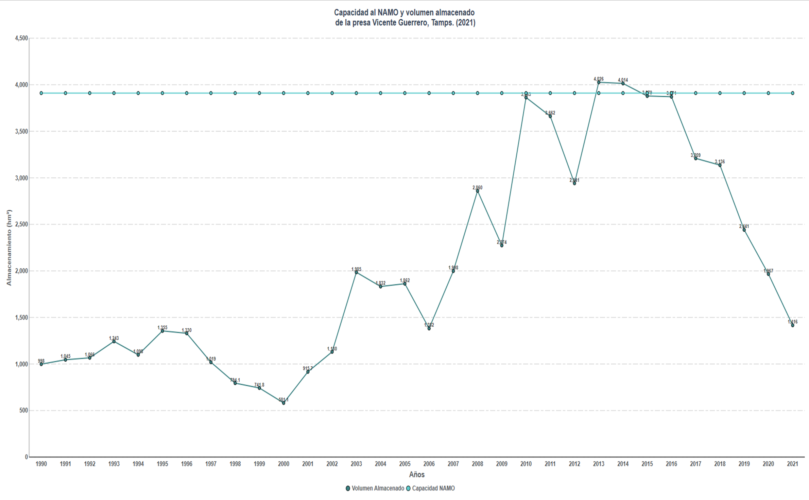Las adjuntas
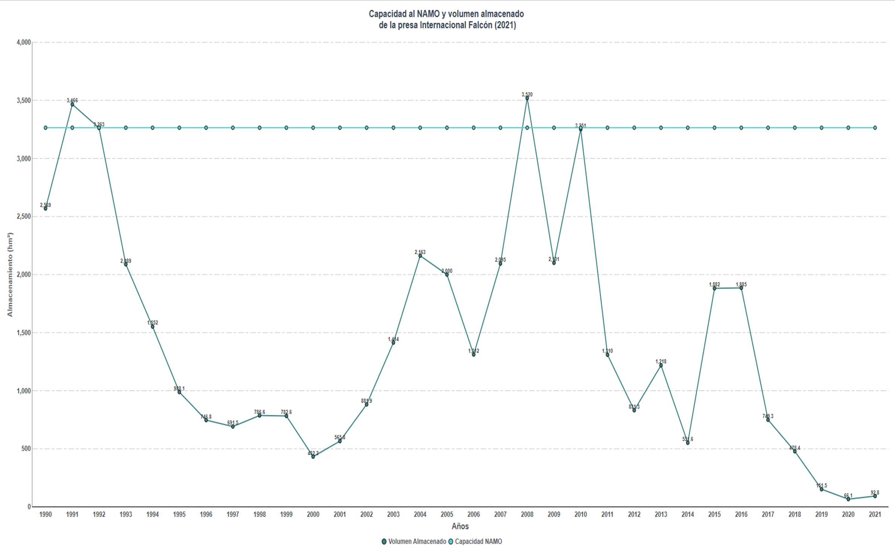Falcón
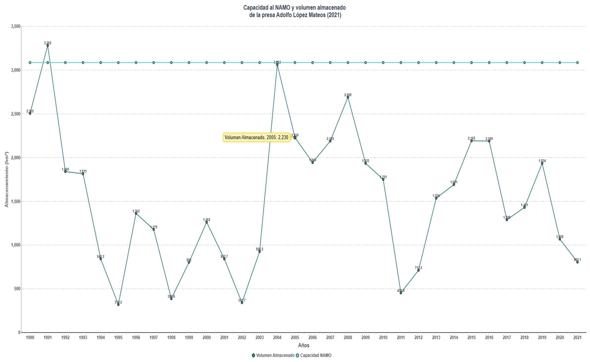El Humaya
¿Qué podemos hacer para mitigar el problema?
Podemos empezar con acciones pequeñas que podemos hacer por nuestra cuenta, tales como:
 Presa de la boca
Presa de la boca